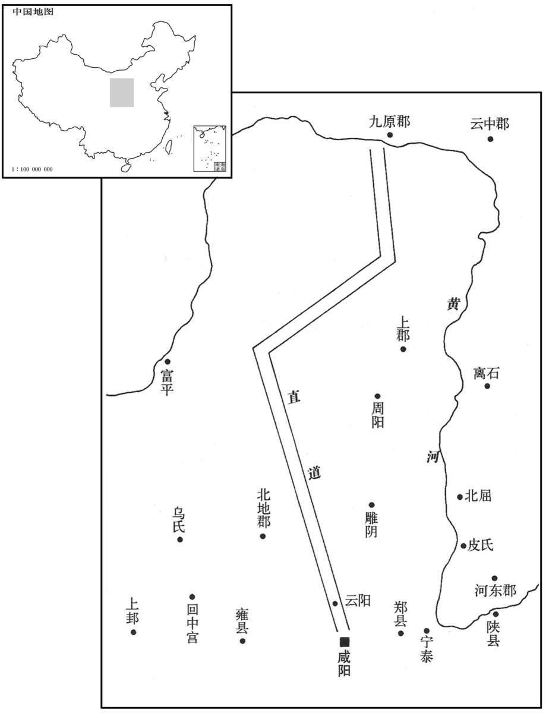
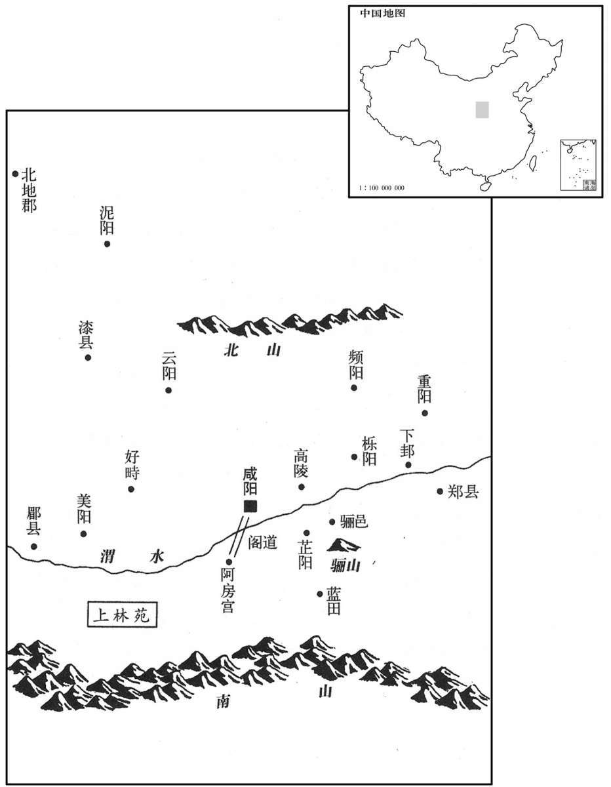

公元前212年资治通鉴：本年记事、原文与白话对照
按原书编年位置阅读；追叙和史论不等于本年发生的事件。白话采用所据译本，缺译不以生成译文补齐。
卷7 · 本年记事
公元前212年 · 始皇帝在位第35年
三十五年〔（己丑、前二一二）〕
本年事件索引（现代整理）

本年形势与背景参考图
使蒙恬除直道，道九原，抵云阳。〔班志，云阳县属冯翊。〕堑山堙谷，〔堑，七艳翻。堙，音因。〕千八百里；数年不就。
始皇帝派蒙恬负责开通大道，从九原直到云阳，挖掘大山，填塞峡谷，长达一千八百里，几年没有完工。
始皇以为咸阳人多，先王之宫庭〔【章：十二行本“庭”作“廷”；乙十一行本同；孔本同。】〕小，乃营作朝宫渭南上林苑中，先作前殿阿房，〔师古曰：阿，近也；以其去咸阳近，且号阿房。索隐曰：此以形名宫也；言其宫曰（四）阿房（旁）广也。三辅黄图曰：作宫阿基旁，天下谓之阿房。括地志：秦阿房宫亦曰阿城，在雍州长安县西一十四里。史记正义曰：按宫在上林宛中；雍州郭城西南面，即阿房宫城东南面也。房，白郎翻。〕东西五百步，南北五十丈，上可以坐万人，下可以建五丈旗，周驰为阁道，自殿下直抵南山，〔关中有南山、北山：自甘泉连延至巀嶭、九嵕为北山；自终南、太白连延至商岭为南山。〕表南山之颠以为阙。为复道，自阿房度渭，属之咸阳，以象天极阁道、绝汉抵营室也。〔天官书曰：天极后十七星，绝汉抵营室，曰阁道。北辰为天极。营室二星，天子之宫也。〕隐宫、徒刑者七十〔【章：十二行本“十”下有“余”字；乙十一行本同；孔本同；张校同。】〕万人，〔史记正义曰：余刑见于市朝；宫刑，一百日隐于荫室养之乃可，故曰隐宫，下蚕室是也。徒刑者，有罪既加刑，复罚作之也。〕乃分作阿房宫或作骊山。发北山石椁，写蜀、荆地材，〔康曰：写，四夜切；舍车解马为写，或作“卸”。余谓此非舍车解马之“卸”，即前写放宫室之“写”，读如字。〕皆至；关中计宫三百，〔或曰：“皆至”当属上句。关中记云：东自函关弘农郡灵宝县界，西至陇关汧阳郡汧源县界，二关之间，谓之关中，东西千余里。〕关外四百余。于是立石东海上朐界中，以为秦东门。〔班志：东海郡朐县，始皇立石海上，以为东门阙。朐，音劬。〕因徙三万家骊邑，五万家云阳，皆复不事十岁。〔复，方目翻，除也。不事者，不供征役之事。〕
始皇认为都城咸阳的人口过多，而先代君王营造的宫廷又嫌小，便命人在渭南上林苑中建筑宫殿，先修前殿阿房宫，长宽东西五百步，南北五十丈，上面可坐一万人，下面则能竖立五丈高的旗帜，周围是车马驰行的天桥，从前殿下直达南山，在南山的顶峰建牌楼作为标志。又筑造天桥，从阿房渡过渭水，与咸阳城相接，由此象征天上的北极星、阁道星横越银河抵达营室宿。征发遭受宫刑和判处其他徒刑的囚犯七十万人，分别修筑阿房宫或建造骊山始皇帝陵墓。并凿掘用作套棺的北山的石料，采伐蜀、荆两地的木材，都先后运到。在关中兴建宫殿计有三百座，关外营造宫殿四百多座。于是在东海郡的朐县界内刻立巨石，作为秦王朝东部的大门。又将三万家迁移到骊邑，五万家迁移至云阳，均免除十年的赋税徭役。

卢生说始皇曰：“方中：人主时为微行以辟恶鬼。恶鬼辟，〔辟，读曰避。〕真人至。愿上所居宫毋令人知，然后不死之药殆可得也！”始皇曰：“吾慕真人！”自谓“真人”，不称“朕”。〔康曰：称，去声；不称，不惬意也。余谓康说非也。始皇初并天下，自称曰朕，至此不称朕耳。〕乃令咸阳之旁二百里内宫观二百七十，复〔【章：十二行本“复”作“复”；乙十一行本同；孔本同。】〕道、甬道相连，帷帐、钟鼓、美人充之，各案署不移徙。行所幸，有言其处者，罪死。始皇幸梁山宫，〔班志：梁山宫在扶风好畤县。括地志：俗名望宫山，在雍州好畤县西十二里，北去梁山九里。雍录曰：唐奉天县有梁山，秦之梁山宫正在其地。〕从山上见丞相车骑众，弗善也。中人或告丞相，丞相后损车骑。始皇怒曰：“此中人泄吾语！”案问，莫服，捕时在旁者，尽杀之。自是后，莫知行之所在。群臣受决事者，悉于咸阳宫。
卢生劝说始皇帝道：“有一种方法，这就是皇帝不时地暗中秘密出行，借此躲避恶鬼。而避开了恶鬼，神仙真人便会来到。故此希望您所居住的宫室不要让别人知道，然后不死之药大概才可以得到！”始皇说：“我敬慕真人！”于是就自称“真人”，不再称“朕”。并下令咸阳城周围二百里内的二百七十处宫殿楼台，都用天桥、甬道相连接，帷帐、钟鼓及美女充斥其间，各自按布署登记，不作迁移。始皇巡行到某处居住下来，有敢于透露出他的驻地的，即获罪处死。始皇帝曾前往梁山宫，从山上望见丞相李斯的随行车马非常多，很不赞许。宦官近臣中有人将这事告诉了李斯，李斯随即减少了他的车马。始皇愤怒地说：“这一定是宫中人泄露了我的话！”于是审问随从人员，但是没有人承认。始皇就下令捉拿当时在场的人，全部杀掉。从此以后，再也没有人知道始皇到了什么地方。群臣中凡有事情要奏报并接受皇帝裁决的，便全都到咸阳宫等候。
侯生、卢生相与讥议始皇，因亡去。始皇闻之，大怒曰：“卢生等，吾尊赐之甚厚，今乃诽谤我！〔诽，敷尾翻。〕诸生在咸阳者，吾使人廉问，或为妖言以乱黔首。”〔廉，察也。秦有诽谤、妖言之罪，汉除之。妖，于遥翻。〕于是使御史悉案问诸生。〔秦置御史，掌讨奸猾，治大狱，御史大夫统之。〕诸生传相告引，〔传相告引者，谓甲引乙，乙复引丙也。传，柱恋翻。相，如字。〕乃自除犯禁者四百六十余人，皆坑之咸阳，使天下知之，以惩后；益发谪徙边。始皇长子扶苏谏曰：“诸生皆诵法孔子。〔诵孔子之言以为法也。〕今上皆重法绳之，臣恐天下不安。”始皇怒，使扶苏北监蒙恬军于上郡。〔为胡亥夺嫡杀扶苏张本。〕
侯生、卢生相互讥讽、评议始皇帝的暴戾，并因此逃亡而去。始皇闻讯勃然大怒，说：“卢生等人，我尊敬他们，并重重地赏赐他们，现在竟然敢诽谤我！这些人在咸阳的，我曾派人去查访过，其中有的人竟妖言惑众！”于是令御史逮捕并审问所有的儒生。儒生们彼此告发，始皇帝就亲自判处违法犯禁的人四百六十余名，把他们全部在咸阳活埋了。还向全国宣扬，让大家都知道这件事，以惩戒后世。同时谪罚更多的人流放到边地戍守。始皇的长子扶苏为此规劝道：“那些儒生们全诵读并效法孔子的言论。而今您全部用重法惩处他们，我担心天下会因此不安定。”始皇大为恼火，派扶苏赴上郡去监督蒙恬的军队。